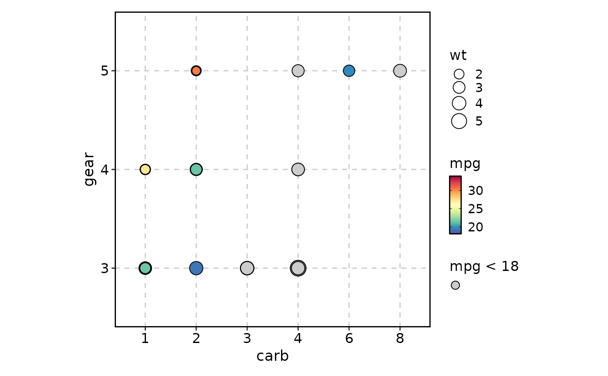
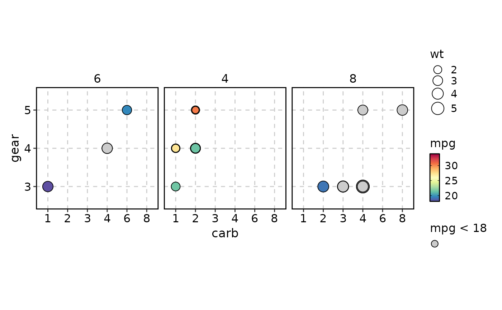
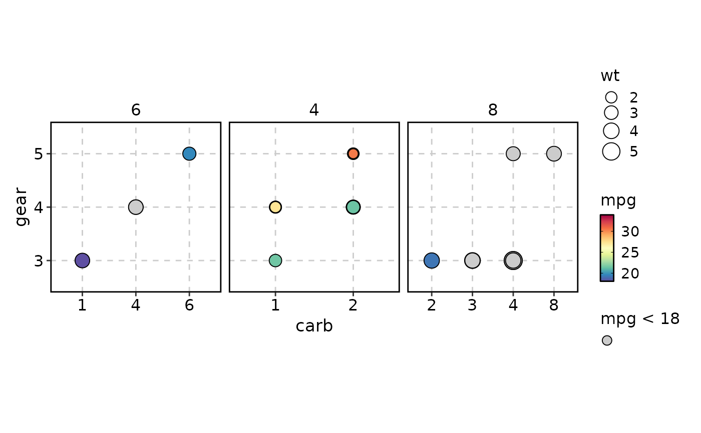
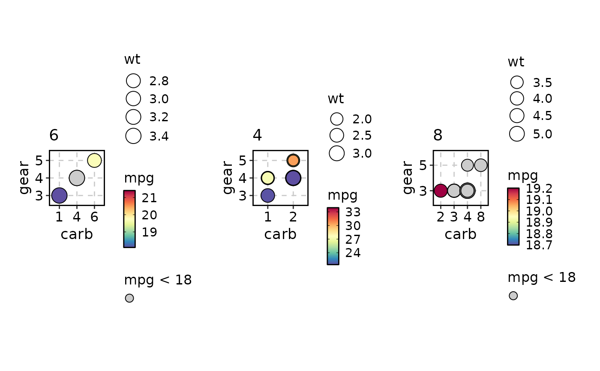
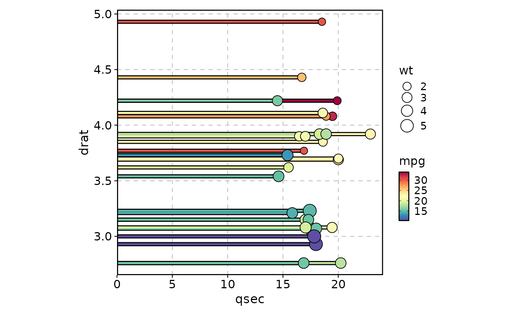
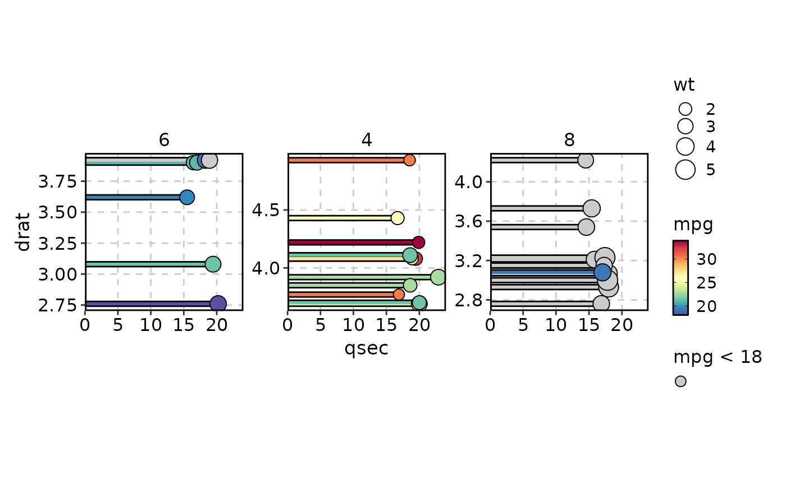
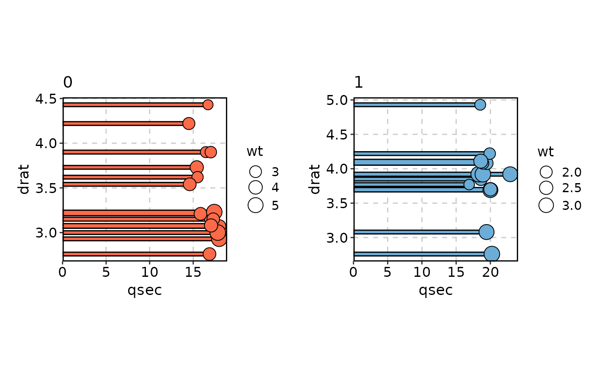

For DotPlot, X-axis and Y-axis could be either numeric or factor/character.
When x-axis and y-axis are both numeric, the plot works as a scatter plot.
LollipopPlot is an alias of DotPlot when lollipop = TRUE.
Usage
DotPlot(
data,
x,
y,
x_sep = "_",
y_sep = "_",
flip = FALSE,
split_by = NULL,
split_by_sep = "_",
size_name = NULL,
fill_name = NULL,
fill_cutoff_name = NULL,
add_bg = FALSE,
bg_palette = "stripe",
bg_palcolor = NULL,
bg_alpha = 0.2,
bg_direction = c("vertical", "horizontal", "v", "h"),
size_by = NULL,
fill_by = NULL,
fill_cutoff = NULL,
fill_reverse = FALSE,
theme = "theme_this",
theme_args = list(),
palette = "Spectral",
palcolor = NULL,
alpha = 1,
facet_by = NULL,
facet_scales = "fixed",
facet_ncol = NULL,
facet_nrow = NULL,
facet_byrow = TRUE,
x_text_angle = 0,
seed = 8525,
aspect.ratio = 1,
legend.position = "right",
legend.direction = "vertical",
title = NULL,
subtitle = NULL,
xlab = NULL,
ylab = NULL,
keep_empty = FALSE,
combine = TRUE,
nrow = NULL,
ncol = NULL,
byrow = TRUE,
...
)
LollipopPlot(
data,
x,
y,
y_sep = NULL,
flip = FALSE,
split_by = NULL,
split_by_sep = "_",
size_name = NULL,
fill_name = NULL,
fill_cutoff_name = NULL,
size_by = NULL,
fill_by = NULL,
fill_cutoff = NULL,
fill_reverse = FALSE,
theme = "theme_this",
theme_args = list(),
palette = "Spectral",
palcolor = NULL,
alpha = 1,
facet_by = NULL,
facet_scales = "fixed",
facet_ncol = NULL,
facet_nrow = NULL,
facet_byrow = TRUE,
x_text_angle = 0,
seed = 8525,
aspect.ratio = 1,
legend.position = "right",
legend.direction = "vertical",
title = NULL,
subtitle = NULL,
xlab = NULL,
ylab = NULL,
keep_empty = FALSE,
combine = TRUE,
nrow = NULL,
ncol = NULL,
byrow = TRUE,
...
)Arguments
- data
A data frame.
- x
A character vector specifying the column to use for the x-axis. A numeric column is expected.
- y
A character vector specifying the column to use for the y-axis. A factor/character column is expected.
- x_sep
A character vector to concatenate multiple columns in x. Default is "_".
- y_sep
A character vector to concatenate multiple columns in y. Default is "_".
- flip
A logical value indicating whether to flip the x and y axes. Default is FALSE.
- split_by
The column(s) to split data by and plot separately.
- split_by_sep
The separator for multiple split_by columns. See
split_by- size_name
A character vector specifying the name for the size legend.
- fill_name
A character vector specifying the name for the fill legend.
- fill_cutoff_name
A character vector specifying the name for the fill cutoff legend.
- add_bg
A logical value indicating whether to add a background color to the plot. Default is FALSE.
- bg_palette
A character vector specifying the palette for the background color. Default is "stripe".
- bg_palcolor
A character vector specifying the color for the background color.
- bg_alpha
A numeric value specifying the alpha for the background color. Default is 0.2.
- bg_direction
A character vector specifying the direction for the background color. Default is "vertical". Other options are "horizontal". "h" and "v" are also accepted.
- size_by
Which column to use as the size of the dots. It must be a numeric column. If not provided, the size will be the count of the instances for each 'y' in 'x'. For 'ScatterPlot', it can be a single numeric value to specify the size of the dots.
- fill_by
Which column to use as the fill the dots. It must be a numeric column. If not provided, all dots will be filled with the same color at the middle of the palette.
- fill_cutoff
A numeric value specifying the cutoff for the fill column.
- fill_reverse
A logical value indicating whether to reverse the fill direction. Default is FALSE. By default, the fill direction is "up". If TRUE, the fill direction is "down". When the direction is "up", the values less than the cutoff will be filled with grey. When the direction is "down", the values greater than the cutoff will be filled with grey.
- theme
A character string or a theme class (i.e. ggplot2::theme_classic) specifying the theme to use. Default is "theme_this".
- theme_args
A list of arguments to pass to the theme function.
- palette
A character string specifying the palette to use. A named list or vector can be used to specify the palettes for different
split_byvalues.- palcolor
A character string specifying the color to use in the palette. A named list can be used to specify the colors for different
split_byvalues. If some values are missing, the values from the palette will be used (palcolor will be NULL for those values).- alpha
A numeric value specifying the transparency of the plot.
- facet_by
A character string specifying the column name of the data frame to facet the plot. Otherwise, the data will be split by
split_byand generate multiple plots and combine them into one usingpatchwork::wrap_plots- facet_scales
Whether to scale the axes of facets. Default is "fixed" Other options are "free", "free_x", "free_y". See
ggplot2::facet_wrap- facet_ncol
A numeric value specifying the number of columns in the facet. When facet_by is a single column and facet_wrap is used.
- facet_nrow
A numeric value specifying the number of rows in the facet. When facet_by is a single column and facet_wrap is used.
- facet_byrow
A logical value indicating whether to fill the plots by row. Default is TRUE.
- x_text_angle
A numeric value specifying the angle of the x-axis text.
- seed
The random seed to use. Default is 8525.
- aspect.ratio
A numeric value specifying the aspect ratio of the plot.
- legend.position
A character string specifying the position of the legend. if
waiver(), for single groups, the legend will be "none", otherwise "right".- legend.direction
A character string specifying the direction of the legend.
- title
A character string specifying the title of the plot. A function can be used to generate the title based on the default title. This is useful when split_by is used and the title needs to be dynamic.
- subtitle
A character string specifying the subtitle of the plot.
- xlab
A character string specifying the x-axis label.
- ylab
A character string specifying the y-axis label.
- keep_empty
A logical value indicating whether to keep empty groups. If FALSE, empty groups will be removed.
- combine
Whether to combine the plots into one when facet is FALSE. Default is TRUE.
- nrow
A numeric value specifying the number of rows in the facet.
- ncol
A numeric value specifying the number of columns in the facet.
- byrow
A logical value indicating whether to fill the plots by row.
- ...
Additional arguments.
Value
A ggplot object or wrap_plots object or a list of ggplot objects
A ggplot object or wrap_plots object or a list of ggplot objects
Examples
mtcars <- datasets::mtcars
mtcars$carb <- factor(mtcars$carb)
mtcars$gear <- factor(mtcars$gear)
DotPlot(mtcars, x = "carb", y = "gear", size_by = "wt",
fill_by = "mpg", fill_cutoff = 18)

DotPlot(mtcars, x = "carb", y = "gear", size_by = "wt",
fill_by = "mpg", fill_cutoff = 18, add_bg = TRUE)
DotPlot(mtcars, x = "carb", y = "gear", size_by = "wt",
fill_by = "mpg", fill_cutoff = 18, add_bg = TRUE,
bg_direction = "h")
DotPlot(mtcars, x = "carb", y = "gear", size_by = "wt",
fill_by = "mpg", fill_cutoff = 18, facet_by = "cyl")

DotPlot(mtcars, x = "carb", y = "gear", size_by = "wt",
fill_by = "mpg", fill_cutoff = 18, facet_by = "cyl",
facet_scales = "free_x")

DotPlot(mtcars, x = "carb", y = "gear", size_by = "wt",
fill_by = "mpg", fill_cutoff = 18, split_by = "cyl")

DotPlot(mtcars, x = "carb", y = "gear", size_by = "wt",
fill_by = "mpg", fill_cutoff = 18, split_by = "cyl",
palette = list("4" = "Set1", "6" = "Paired", "8" = "Reds"))
# works as a scatter plot
DotPlot(mtcars, x = "qsec", y = "drat", size_by = "wt",
fill_by = "mpg", fill_cutoff = 18, fill_cutoff_name = "Small mpgs")
LollipopPlot(mtcars, x = "qsec", y = "drat", size_by = "wt",
fill_by = "mpg")

LollipopPlot(mtcars, x = "qsec", y = "drat", size_by = "wt",
fill_by = "mpg", fill_cutoff = 18, facet_by = "cyl",
facet_scales = "free_y")

LollipopPlot(mtcars, x = "qsec", y = "drat", size_by = "wt",
split_by = "vs", palette = list("0" = "Reds", "1" = "Blues"))
